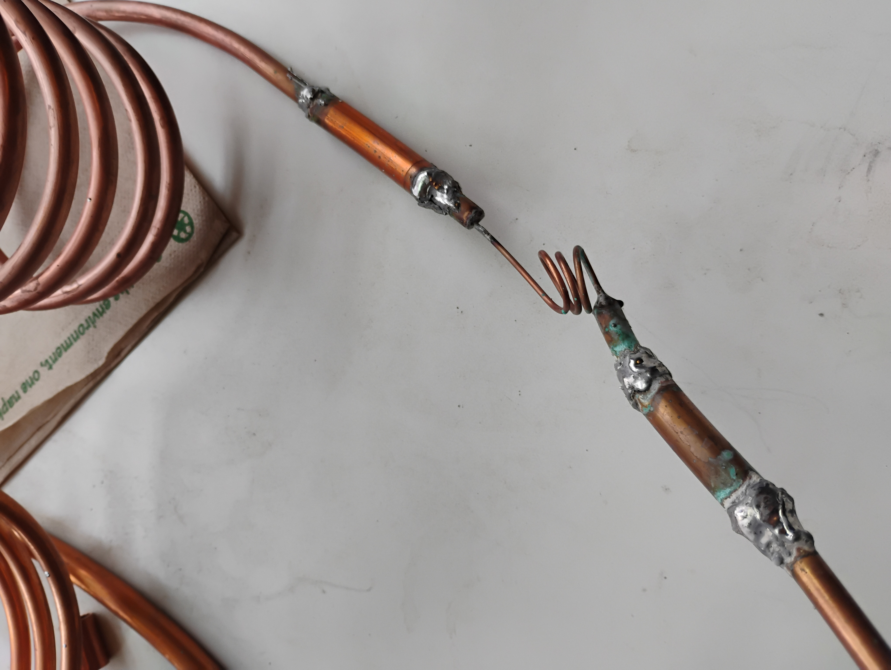
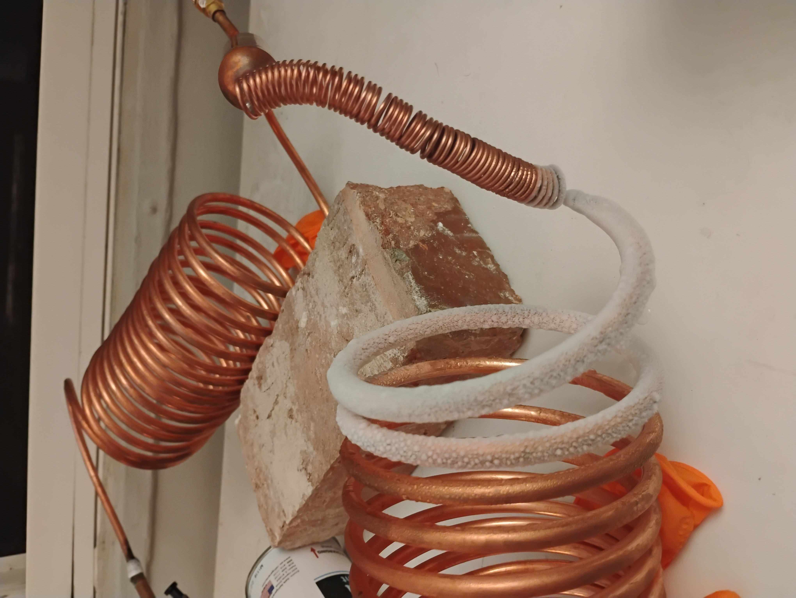

Refrigeration is everywhere
The Florida man that invented air conditioning died in poverty, driven out of business by the incumbents whose industry he was trying to distrupt: the 19th century Ice Barrons of New England. Since then, refrigeration has revolutionized our world. Refrigeration has made mass vaccination possible; it allowed us to largely eradicate measles, rubella, polio, and a host of other diseases that have killed millions of people. Refrigeration, in the form of air conditioning, has made large-scale human habitation of Florida and Arizona possible and shifted the center of political and social power in America. Florida now commemorates their man, John Gorrie, with a statue in the U.S. Capitol Building.
At the same time, refrigeration kneecapped southern social life, by driving people from their porches and into the privacy of their (air conditioned) suburban homes. And refrigeration is driving the climate crisis, even as it's helping people weather increasingly frequent, brutal heatwaves. Air conditioning is 19% of U.S. residential electricity use. A pound of the most common refrigerant gas used today in home air conditioning (R-410A) has the same global warming impact as 2,088 pounds of carbon dioxide, if it leaks from your unit.
Refrigeration is a structural support that makes our world possible, hiding in plain sight. How does it work?
The surprisingly simple physics of refrigeration
The first thing to understand is that basically all refrigeration devices (refrigerators, freezers, heatpumps, AC units, icemakers, dehumidifiers, etc) work by the same general principle.[2]
You create a closed loop of metal tubing (usually copper, since copper conducts heat well). This loop will have the refrigerant gas in it. Many refrigeration devices use gases called hydrofluorocarbons, which are bad for the climate if they leak from the equipment. We used to use gases that destroyed the ozone layer and caused climate change, so this is a kind of improvement. (The guy who invented those gases also invented leaded gasoline; who says one person can't make a difference). The U.S. is moving towards using gases with lower climate impacts. For this project, I used isobutane (which the HVAC industry calls "R-600a"). You may know isobutane as the gas you use on your portable camping stove. Isobutane heats the planet only 3x more than CO2, but it's also flammable, so you have to handle it carefully.
The most important quality in a refrigerant is that it's close to being both a liquid and a gas around room temperature. More on why below, but the gist here is that refrigerators compress and expand this gas, which heats and cools the gas, which allows you to either absorb or release heat into the ambient air around the copper coils. If the gas changes from a liquid to a gas (or vice versa), that helps you absorb/release heat more effectively, because those phase changes involve a lot of energy transfer.
Anyway, one part of this copper loop has the compressor stuck into it. The compressor is a pump that
pushes the refrigerant forward through the copper tubing.
Compressors take a lot of energy because it takes a lot of force to push the refrigerant gas around the
loop.
We're going to start our walk through this system at the compressor.

- The refrigerant gas gets shot down the tubing by the compressor, into a coiled length of tubing called the condenser. Right out of the compressor, the refrigerant gas is hot and high pressure (the compressor is pushing the gas forward).
- Then the gas reaches a loop of copper coil called the condensor. In the condensor, the gas is hotter than the surrounding air outside the tube, so the gas releases its heat into the surrounding air. (The same way that a cup of hot tea is hotter than your hands, so it releases warmth into your hands).
- Then we reach a point in the loop where the inner diameter of the copper tube suddenly gets much smaller. This length of smaller tube is called a capillary tube, or the "restriction" in the refrigeration circuit. This is where the thermodynamic magic happens. Say a large crowd of people is trying to leave a theater through one small door. (The crowd of people are the molecules of the refrigerant gas here). Not everyone can fit through the door at once, so the crowd will bunch up before the door (the condenser's side of the copper tubing). In other words, the door is creating a "high pressure zone" (a crammed crowd of people) on the inside of the theater. This, along with the compressor constantly pumping more refrigerant molecules into the circuit, is what makes the gas hot and high pressure in the condensor tubing.
- The capillary tube sort of divides the refrigeration circuit in two (along with the compressor). On the other side of the capillary tube, the inner diameter of the copper tube widens again. To return to our theater analogy: on the other side of the door (in the street) there's a lot more space than in that narrow doorway. But because only a few people can fit through the door frame at a time, the people who make it through the door, and continue on their way down the street--each of them suddenly has a lot more space. In other words, the pressure of the refrigerant gas in this section of tube--the evaporator coil--suddenly drops. This means the gas is less dense and has less energy than the ambient air around the copper tube. This feels "cold" to the touch. As a result, the gas in the evaporator tube absorbs heat from the surrounding air, making that air colder, before returning to the compressor, to start the whole process over.
Whether you have a heater (heat pump) or air conditioner just depends on whether the side of the refrigeration circuit that dumps heat (condenser) or absorbs heat (evaporator) is on the inside or outside of your house. If you turn an air conditioner around, it's a heater.
Sidebar: the ingenious reversing valve that makes heatpumps possible
Heat pumps don't actually physically turn their coils around, since they're usually run through the wall of your house. Instead, they use a super clever 4-way valve to just send the refrigerant in the opposite direction, depending on whether you want to heat or cool the inside of your house. The mechanism is sort of like an electronic relay--it uses a magnetic little switch to divert a small amount of refrigerant to a bigger valve in the copper coils. Then that bit of refrigerant itself pushes the bigger valve to a different position, which redirects the main flow of refrigerant. Here's a neat video on this (all of Ty Branaman's HVAC videos are great):
Maybe try this at home (but don't do it this way)
That's how refrigeration works conceptually. But I'm a learning-by-touching-the-stove kind of guy, so I ordered a minifridge compressor on ebay, along with copper tubing, isobutane, and some pressure gauges. The gauges help us tell if we have enough pressure on each side of the restriction (the capillary tube). The result is shown below. We managed to get the refrigeration coil down to 30 degrees or so. I am not an HVAC technician or refrigeration engineer, so I was happy with this.
So why are heatpumps zeitgeisty?
Maybe you burn gas to heat your house. Or maybe you have electric baseboard heating, which is basically just putting little toasters around your house.
There is a hard limit on these heating technologies' thermodynamic efficiency. The most heat you can get out of baseboard heating is however much energy (electricity) you put in. In other words, the maximum ratio of heat output to energy input into the system (the electricity or gas) is 1:1. In practice, it's lower than 1:1, because some of the heat leaks to the outside of your house. HVAC people call this ratio the "coefficient of performance" or COP.
What's crazy about heat pumps (and air conditioners--again, heat pumps are just AC units turned around) is that heat pumps have COPs greater than one. In DC winter, you could expect a COP between 2 and 3. This means that the heat pump is providing 2-3x more heat to the inside of your house than it's consuming in electricity. This sounds like magic, but it's just transferring heat around by pressurizing a refrigerant gas.
That, along with the fact that heat pumps can be powered with cheap, renewable electricity, is why heat pumps have been outselling gas furnaces.
A long list of lessons (mistakes)
Part of the fun of these projects is learning by breaking things. Some lessons:
- Compressors use a lot of energy. For our first attempt at this, we bought a pump for a fish tank (see below). Aside from the fact that fish tank pumps aren't hermetically sealed (so the gas just leaked out), these pumps can only put out 220 KPA of pressure, which is about 32 PSI. For reference, on our working version of the minifridge, with the real compressor, we measured pressures in the condensor coil more than twice that.
- It takes a fair amount of restriction to create a pressure differential on each side of the refrigeration circuit. In our second attempt at this (with a real compressor) we used a capillary tube that was too short, with too large an inner diameter (see below). This meant that the capillary tube didn't restrict the flow of refrigerant very much. Which meant the pressure throughout the circuit was essentially the same. Which meant no heating or cooling.
- Lead solder is not a great way to join copper tubing. And: life is much easier if you size your copper tubing up front so it fits snugly together. I did not do that. The result was many hours spent trying to find pin-sized holes in my soldered joints where gas was leaking out (you can do this by putting soapy water on the joints and adding a little gas to the system; the bubbles will expand). This was tedious. Real HVAC techs use lead-free braze and properly-sized piping. Now I understand why!
- Work outside. Partly because DC rent is so stupidly high, there are no makerspaces near me. So I just did this in my apartment with the windows open and a fan on. This was not ideal. At one point I opened a valve while the system was under pressure and tried to burn off the gas to vent it, so I could resolder a connection. A fireball engulfed my studio. Learn from my mistakes!



Thank you to Nika Sitomer and Leo Cosgrove for helping build this!
↑ This project is not related my day job. (This was a hobby project)
↑ There is some absolutely wild research happening at the frontier of materials science, which uses "solid refrigerants" that absorb and release heat when you massage them with magnets. This could avoid many of the greenhouse gas emissions associated with the refrigerant gases used today. But that technology is yet to be deployed commercially and at scale. (You can't go to the hardware store and buy a window unit that works this way).